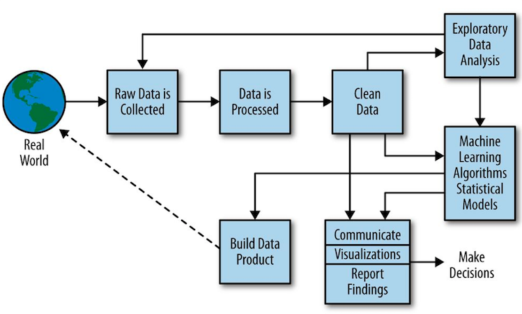
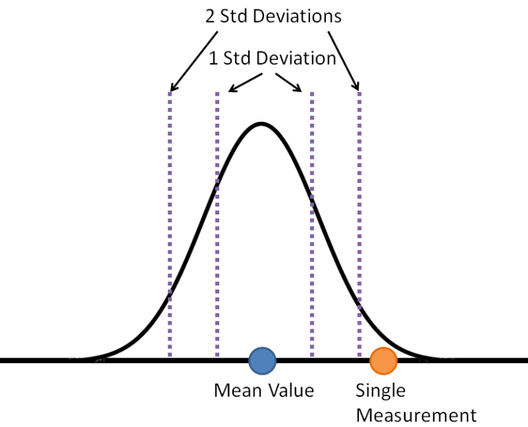
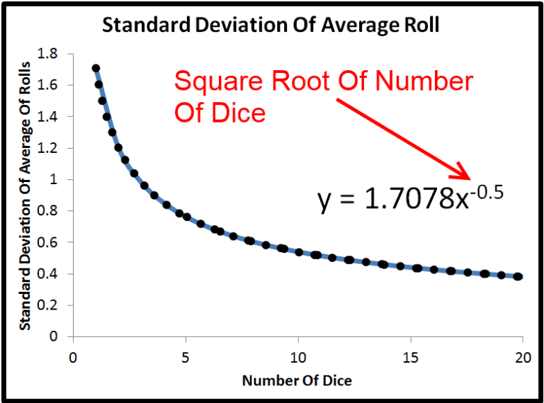
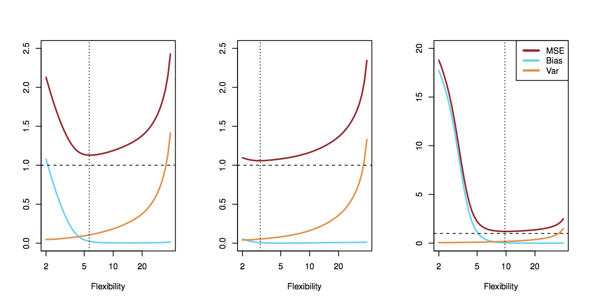
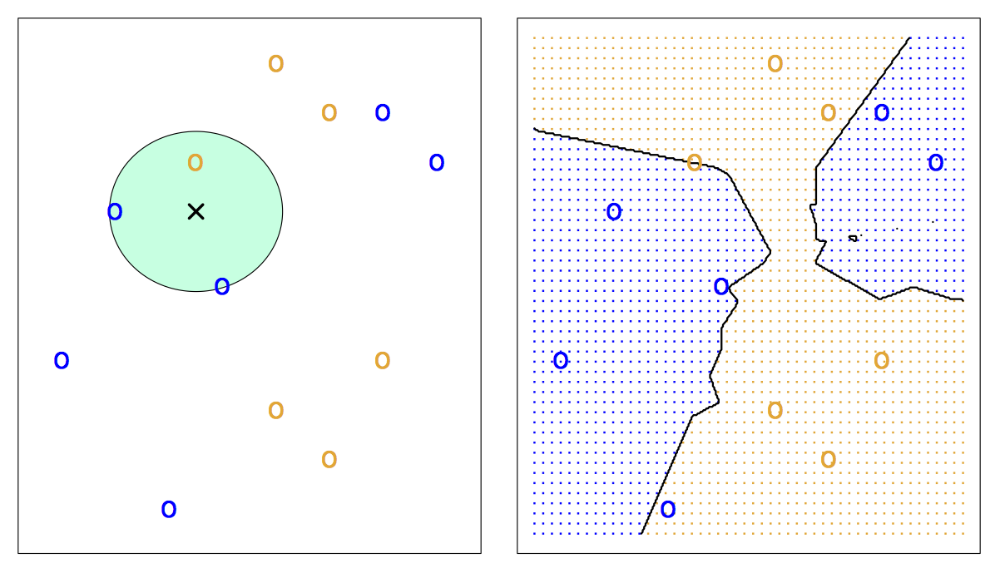

name: title class: center, middle # Machine Learning: .di-orange[Data Foundations<br>+ Algorithms & Applications] # .di-orange[Day 3] --- layout: false .left-column[ ## Agenda - Day 3 ] .right-column[ - Introduction - "Homework" (k-Means Iris) Review - Python Numerics - More! Pandas - More! Data-Driven - More! SciKit-Learn ] --- name: introduction class: center, middle, di-style # Introduction --- class: center, middle # Where We Came From  .footnote["Doing Data Science"] ??? # Key Points: - We detect changes in the world - We need structure - clean it up, standardize it - Understand the data - called Business Intelligence - Exploratory Data analysis = apply models and start to learn from it - Talk about the model that we got in the homework (Iris) - Of the many tools you used, Which tools were best? - Why? - Which models work well with the data - It's about finding the right tool for the right job. - Machine Learning - Once we find a working model, train off of it to build a data product - What are some of the problems? - Interpretability - Need to keep business goals in mind - Training data doesn't match production data (where and when are we training and updating the model) - Operational considerations - GBs to phone = bad - When other tools don't / can't work, we use ML - Solve business problems by understanding our data --- # Big Concepts ??? # Key Points: - Make Data Versioned - We want to make data accessible - shouldn't have to "know somebody" - Linked Data - Expect that context can be inferred - Otherwise too hard to get info - Pulling context out of our heads, emails, etc into systems. - Descriptive, Predictive, Prescriptive - People have always had to do this - Discipline in using/gathering the correct data - Justify the effort to solve business problems using these technologies. - Dimesionality Reduction - “just capture everything” —> datasets get sparse, compute get used, time cycles increase, so it’s about balance. -- * Data as an Asset -- * Role of Context -- * Bad Data + ML = No Good -- * Data Familiarity -- * Curse of Dimensionality --- class: center, middle, di-style # Demo: .di-orange["Homework" Review] --- # "Homework" Review * let's open the notebook named __`Demo - k-Means IRIS.ipynb`__ and go through it together ??? # Key Points: - Take a look at the k-Means Iris Example - Touches on most of the things we just talked about. - Understand how python and jupyter notebooks work - What do we know about the irises? - Not all dimensions are useful - What kind of learning is k-Means clustering? - Unsupervised - Clusters in customer data? - No idea. - Understanding basics: - Read in - Numpy - Pandas - Documentation, Data Science will not spoon feed you anything. - You are biasing by selecting the amount of clusters - Th --- name: demo-1 class: center, middle, di-style # Demo: .di-orange[Python Numerics] --- name: python-numerics # Python Numerics * __`numpy`__ is the de facto numerical toolkit for Python (http://www.numpy.org) * there are screenshots in this presentation to maintain continuity, but let's open the notebook named __`Demo - Python Numerics.ipynb`__ and go through it together * when done, click <a href="#exercise-2">here</a> to skip screenshots ??? # Key Points: - Questions before we move on? - What Language did you learn first? - get responses - Python being used for numerical stuff and ML - Horrible idea, Python doesn't have support for multidimensional arrays and a bunch of other stuff - Numpy and Pandas have made it great for this --- class: center, middle .footnote["Python Data Science Handbook"] ??? # Key Points: - R, Java bad - Python is winning the battle of walking the line between performance and usability. Its complete and performant. -Spark is creeping up but doesn't have the coverage (libraries & community) - Understand Python as a Numerics language: - Integer is an object, metadata about type and state, value is in there too - Creating a bunch of integers and turning them into a list looks like -> Next Slide --- class: center, middle .footnote["Python Data Science Handbook"] ??? # Key Points: - List has its own metadata, and points to an array of objects (integers) in memory with their own metadata - Unusable from a performance/memory perspective --- ```python import numpy as np np.random.seed(0) def compute_reciprocals(values): output = np.empty(len(values)) for i in range(len(values)): output[i] = 1.0 / values[i] return output values = np.random.randint(1, 10, size = 5) compute_reciprocals(values) ``` ??? # Key Points: - Python has math, it's just too slow. - numpy = just integers/floating point - numpy arrays are single-typed (not object) for more performance -- ```python Out[1]: array([ 0.16666667, 1. , 0.25 , 0.25 , 0.125 ]) ``` -- ```python In[2]: big_array = np.random.randint(1, 100, size = 1000000) %timeit compute_reciprocals(big_array) 1 loop, best of 3: 2.91 s per loop ``` --- ```python import numpy as np ``` ??? # Key Points: - Import as np - idiomatic / pythonic to import as np - Tools to help convert from integer to other numbers - common numerics issues - Not a requirement, but much easier to read for others -- ```python >>> x = 2.345 ``` -- ```python >>> x - 2.345 0.0 ``` -- ```python >>> x - 2.345 == 0.0 True ``` --- # np.trunc() * nearest integer i which is closer to zero than x is ??? # Key Points: - This and next few slides are formal definitions for exact clarity -- ```python >>> np.trunc(x) 2.0 ``` --- # np.floor() * the largest integer i, such that i <= x -- ```python >>> np.floor(x) 2.0 ``` -- ```python >>> np.floor(2.01) 2.0 ``` -- ```python >>> np.floor(2.00) 2.0 ``` --- # np.ceil() - the smallest integer i, such that i >= x -- ```python >>> np.ceil(x) 3.0 ``` -- ```python >>> np.ceil(2.01) 3.0 ``` -- ```python >>> np.ceil(2.0) 2.0 ``` -- ```python >>> np.ceil(x) - 1 2.0 ``` -- ```python >>> np.ceil(2.01) - 1 2.0 ``` --- class: center, middle .footnote["Python Data Science Handbook"] ??? # Key Points: - The numpy array is still an object - still has metadata - data is array of a single datatype - Managed easily using pointer arithmetic - Python has a lot of C under the hood - numpy takes advantage - must have homogeneous arrays --- ```python >>> import numpy as np >>> np.array([1, 4, 2, 5, 3]) array([1, 4, 2, 5, 3]) ``` ??? # Key Points: - n-dimensional arrays # Question to Ask: - Why would I want to fill an n-dimensional array with a single value that is not 0? - Reference point or threshold -- ```python >>> np.array([3.14, 4, 2, 3]) array([ 3.14, 4. , 2. , 3. ]) ``` -- ```python >>> np.array([1, 2, 3, 4], dtype='float32') array([ 1., 2., 3., 4.], dtype=float32) ``` -- ```python >>> np.array([range(i, i + 3) for i in [2, 4, 6]]) array([[2, 3, 4], [4, 5, 6], [6, 7, 8]]) ``` -- ```python >>> np.zeros(10, dtype=int) array([0, 0, 0, 0, 0, 0, 0, 0, 0, 0]) ``` -- ```python >>> np.ones((3, 5), dtype=float) array([[ 1., 1., 1., 1., 1.], [ 1., 1., 1., 1., 1.], [ 1., 1., 1., 1., 1.]]) ``` -- ```python >>> np.full((3, 5), 3.14) array([[ 3.14, 3.14, 3.14, 3.14, 3.14], [ 3.14, 3.14, 3.14, 3.14, 3.14], [ 3.14, 3.14, 3.14, 3.14, 3.14]]) ``` --- ??? # Key Points: - __arange__ - You define step-size (range excludes the upper bound) - __linspace__ - you define the number of values (range includes the upper bound) - __eye__ - Identity matrix - only define one attribute (size) -- ```python >>> np.arange(0, 20, 2) array([ 0, 2, 4, 6, 8, 10, 12, 14, 16, 18]) ``` -- ```python >>> np.linspace(0, 1, 5) array([ 0. , 0.25, 0.5 , 0.75, 1. ]) ``` -- ```python >>> np.random.random((3, 3)) array([[ 0.33687321, 0.57661167, 0.77955889], [ 0.7441428 , 0.53766224, 0.62966105], [ 0.27348138, 0.27234265, 0.71558399]]) ``` -- ```python >>> np.random.normal(0, 1, (3, 3)) array([[-2.02151788, -0.04433702, -0.16415692], [ 0.28498092, 0.4638266 , 0.64989753], [-0.93943869, -1.90040282, -0.94711293]]) ``` -- ```python >>> np.random.randint(0, 10, (3, 3)) array([[7, 3, 0], [3, 3, 4], [9, 2, 6]]) ``` -- ```python >>> np.eye(3) array([[ 1., 0., 0.], [ 0., 1., 0.], [ 0., 0., 1.]]) ``` --- # Converting array types ??? # Key Points: - Build a linear spaced array from 0 to 10 with 50 values - now give me that same array as integers -- ```python >>> x = np.linspace(0,10,50) >>> x array([ 0. , 0.20408163, 0.40816327, 0.6122449 , 0.81632653, 1.02040816, 1.2244898 , 1.42857143, 1.63265306, 1.83673469, 2.04081633, 2.24489796, 2.44897959, 2.65306122, 2.85714286, 3.06122449, 3.26530612, 3.46938776, 3.67346939, 3.87755102, 4.08163265, 4.28571429, 4.48979592, 4.69387755, 4.89795918, 5.10204082, 5.30612245, 5.51020408, 5.71428571, 5.91836735, 6.12244898, 6.32653061, 6.53061224, 6.73469388, 6.93877551, 7.14285714, 7.34693878, 7.55102041, 7.75510204, 7.95918367, 8.16326531, 8.36734694, 8.57142857, 8.7755102 , 8.97959184, 9.18367347, 9.3877551 , 9.59183673, 9.79591837, 10. ]) ``` -- ```python >>> x.astype(int) array([ 0, 0, 0, 0, 0, 1, 1, 1, 1, 1, 2, 2, 2, 2, 2, 3, 3, 3, 3, 3, 4, 4, 4, 4, 4, 5, 5, 5, 5, 5, 6, 6, 6, 6, 6, 7, 7, 7, 7, 7, 8, 8, 8, 8, 8, 9, 9, 9, 9, 10]) ``` --- # Multi-dimensional Arrays ```python >>> x2 = np.random.randint(10, size=(3, 4)) array([[3, 3, 0, 9], [0, 9, 7, 0], [5, 6, 2, 5]]) ``` ??? # Key Points: - negative indices make it easy to flip things and move things around - If you have a one dimensional array, you can fill out an n-dimensional array - If you have an NxM array, you can make an MxN array, but that is about it -- ```python >>> x2[0, 0] 3 >>> x2[2, 0] 5 >>> x2[2, -1] 5 ``` -- ```python >>> x2[0, 0] = 12 >>> x2 array([[12, 3, 0, 9], [ 0, 9, 7, 0], [ 5, 6, 2, 5]]) ``` -- ```python >>> np.arange(0,9).reshape(3,3) array([[0, 1, 2], [3, 4, 5], [6, 7, 8]]) ``` --- # Numpy Array Slicing ??? # Key Points: - unspecified value means do the right thing - step size of 1 is implied - Keeping all these tricks in your head will make you really productive - there is a lot of control here - many code examples will include this - you have to pay attention -- ```python >>> x = np.arange(10) >>> x[:5] array([0, 1, 2, 3, 4]) >>> x[5:] array([5, 6, 7, 8, 9]) ``` -- ```python >>> x[4:7] array([4, 5, 6]) ``` -- ```python >>> x[::2] array([0, 2, 4, 6, 8]) ``` -- ```python >>> x[1::2] array([1, 3, 5, 7, 9]) ``` -- ```python >>> x[::-1] array([9, 8, 7, 6, 5, 4, 3, 2, 1, 0]) ``` -- ```python >>> x[5::-2] array([5, 3, 1]) ``` --- # Filtering 1 dimensional data ```python >>> x = np.array([ 1, 1, 2, 1, 0, 3, 0, 0 ]) ``` ??? # Key Points: - Indices of the nonzero results - Why is this useful? - Cleaning up data - Use the output as the input for another function - take a pass at the data and throw out all the data that is not in a valid range. -- ```python >>> np.nonzero(x) (array([0, 1, 2, 3, 5]),) ``` -- ```python >>> x[np.nonzero(x)] array([1, 1, 2, 1, 3]) ``` -- ```python >>> x[np.nonzero(x < 3)] array([1, 1, 2, 1, 0, 0, 0]) ``` --- # Filtering 2-dimensional data ```python >>> x = np.array([[1,0,0], [0,2,0], [1,1,0]]) >>> x array([[1, 0, 0], [0, 2, 0], [1, 1, 0]]) ``` ??? # Key Points: - 2 dimensional works the same way - flattens results - per dimension, what are the indices. Makes a lot more sense when you transpose -- ```python >>> np.nonzero(x) (array([0, 1, 2, 2]), array([0, 1, 0, 1])) ``` -- ```python >>> x[ np.nonzero(x) ] array([1, 2, 1, 1]) ``` -- ```python >>> np.transpose(np.nonzero(x)) array([[0, 0], [1, 1], [2, 0], [2, 1]]) ``` --- # Multi-dimensional Subarrays ??? # Key Points: - Pull out a sub array - What is going on here? - Give me the first 2 rows and the first 3 columns of those rows. -- ```python >>> x2 array([[12, 3, 0, 9], [ 0, 9, 7, 0], [ 5, 6, 2, 5]]) ``` -- ```python >>> x2[:2, :3] array([[12, 3, 0], [ 0, 9, 7]]) ``` -- ```python >>> x2[:3, ::2] array([[12, 0], [ 0, 7], [ 5, 2]]) ``` -- ```python >>> x2[::-1, ::-1] array([[ 5, 2, 6, 5], [ 0, 7, 9, 0], [ 9, 0, 3, 12]]) ``` --- # Subarray Views -- ```python >>> x2 array([[12, 3, 0, 9], [ 0, 9, 7, 0], [ 5, 6, 2, 5]]) ``` -- ```python >>> x2_sub = x2[:2, :2] >>> x2_sub array([[12, 3], [ 0, 9]]) ``` -- ```python >>> x2_sub[0, 0] = 99 >>> x2_sub array([[99, 3], [ 0, 9]]) ``` -- ```python >>> x2 array([[99, 3, 0, 9], [ 0, 9, 7, 0], [ 5, 6, 2, 5]]) ``` --- # Vectorized Operations ??? # Key Points: - Instead of slow Python math use vectorized computation - Keep using only numpy operators/math - easy to mix in normal Python & slow down - Question - How long per loop normal py math? how much faster this way? A: 1000x - You can use the operators but better to use the named numpy functions for clarity -- ```python big_array = np.random.randint(1, 100, size=1000000) ``` -- ```python In [2]: big_array = np.random.randint(1, 100, size=1000000) ...: %timeit (1.0 / big_array) ...: 100 loops, best of 3: 3.51 ms per loop ``` -- ```python In [4]: big_array = np.random.rand(1000000) ...: %timeit sum(big_array) ...: %timeit np.sum(big_array) 10 loops, best of 3: 85.2 ms per loop 1000 loops, best of 3: 400 µs per loop ``` -- ```python >>> x = np.arange(9).reshape((3, 3)) >>> 2 ** x array([[ 1, 2, 4], [ 8, 16, 32], [ 64, 128, 256]]) ``` -- ```python >>> x = np.arange(4) >>> -(0.5*x + 1) ** 2 array([-1. , -2.25, -4. , -6.25]) ``` --- class: center, middle, compact | Operator | ufunc | Description | |----------|-----------------|-------------------------------------| | + | np.add | Addition (e.g., 1 + 1 = 2) | | - | np.subtract | Subtraction (e.g., 3 - 2 = 1) | | - | np.negative | Unary negation (e.g., -2) | | * | np.multiply | Multiplication (e.g., 2 * 3 = 6) | | / | np.divide | Division (e.g., 3 / 2 = 1.5) | | // | np.floor_divide | Floor division (e.g., 3 // 2 = 1) | | ** | np.power | Exponentiation (e.g., 2 ** 3 = 8) | | % | np.mod | Modulus/remainder (e.g., 9 % 4 = 1) | ??? # Key Points: - You can use the operators but better to use the named numpy functions for clarity --- # Aggregate ufuncs ```python >>> x = np.arange(1, 6) >>> np.add.reduce(x) 15 >>> np.multiply.reduce(x) 120 >>> np.add.accumulate(x) array([ 1, 3, 6, 10, 15]) >>> np.multiply.accumulate(x) array([ 1, 2, 6, 24, 120]) ``` --- name: exercise-2 class: center, middle, di-style # Exercise: .di-orange[Python Numerics] (open the notebook named __`Exercise 8 - Python Numerics.ipynb`__) --- name: Demo2 class: center, middle, di-style # Demo: .di-orange[More! Pandas] --- name: Demo2.1 # More! Pandas * __`pandas`__ is the de facto data analysis toolkit for Python (http://pandas.pydata.org) * there are screenshots in this presentation to maintain continuity, but let's open the notebook named __`Demo - More! Pandas.ipynb`__ and go through it together * when done, click <a href="#exercise-3">here</a> to skip screenshots --- # Pandas Series ```python >>> import pandas as pd >>> data = pd.Series([0.25, 0.5, 0.75, 1.0]) >>> data 0 0.25 1 0.50 2 0.75 3 1.00 dtype: float64 ``` -- ```python >>> data.values array([ 0.25, 0.5 , 0.75, 1. ]) >>> data.index RangeIndex(start=0, stop=4, step=1) ``` -- ```python >>> data[1] 0.5 ``` -- ```python >>> data[1:3] 1 0.50 2 0.75 dtype: float64 ``` --- ```python >>> data = pd.Series([0.25, 0.5, 0.75, 1.0], index=['a', 'b', 'c', 'd']) ``` -- ```python >>> data a 0.25 b 0.50 c 0.75 d 1.00 dtype: float64 ``` -- ```python >>> data['c'] 0.75 ``` -- ```python >>> data = pd.Series([0.25, 0.5, 0.75, 1.0], index=[2, 5, 3, 7]) ``` -- ```python >>> data 2 0.25 5 0.50 3 0.75 7 1.00 dtype: float64 ``` -- ```python >>> data[5] 0.5 ``` --- # Implicit and Explicit Indexing -- ```python >>> data = pd.Series(['a', 'b', 'c'], index=[1, 3, 5]) >>> data 1 a 3 b 5 c dtype: object ``` -- ```python >>> data[1] 'a' ``` -- ```python >>> data[1:3] 3 b 5 c dtype: object ``` --- # loc and iloc -- ```python >>> data 1 a 3 b 5 c dtype: object ``` -- ```python >>> data.loc[1] 'a' >>> data.loc[1:3] 1 a 3 b dtype: object ``` -- ```python >>> data.iloc[1] 'b' >>> data.iloc[1:3] 3 b 5 c dtype: object ``` --- # Python dicts as Series ```python >>> population_dict = {'California': 38332521, 'Texas': 26448193, 'New York': 19651127, 'Florida': 19552860, 'Illinois': 12882135} >>> population = pd.Series(population_dict) ``` -- ```python >>> population California 38332521 Florida 19552860 Illinois 12882135 New York 19651127 Texas 26448193 dtype: int64 ``` -- ```python >>> population['California'] 38332521 ``` -- ```python >>> population['California':'Illinois'] California 38332521 Florida 19552860 Illinois 12882135 dtype: int64 ``` --- # Pandas DataFrame -- ```python >>> area_dict = {'California': 423967, 'Texas': 695662, 'New York': 141297, 'Florida': 170312, 'Illinois': 149995} >>> area = pd.Series(area_dict) >>> area California 423967 Florida 170312 Illinois 149995 New York 141297 Texas 695662 dtype: int64 ``` -- ```python >>> states = pd.DataFrame({'population': population, 'area': area}) >>> states area population California 423967 38332521 Florida 170312 19552860 Illinois 149995 12882135 New York 141297 19651127 Texas 695662 26448193 ``` --- -- ```python >>> states.index Index(['California', 'Florida', 'Illinois', 'New York', 'Texas'], dtype='object') ``` -- ```python >>> states.columns Index(['area', 'population'], dtype='object') ``` -- ```python >>> states['area'] California 423967 Florida 170312 Illinois 149995 New York 141297 Texas 695662 Name: area, dtype: int64 ``` -- ```python >>> states.values array([[ 423967, 38332521], [ 170312, 19552860], [ 149995, 12882135], [ 141297, 19651127], [ 695662, 26448193]]) ``` --- # Sales Data ```python >>> dat = pd.read_csv("data/WA_Fn-UseC_-Sales-Win-Loss.csv") >>> dat.columns Index(['Opportunity Number', 'Supplies Subgroup', 'Supplies Group', 'Region', 'Route To Market', 'Elapsed Days In Sales Stage', 'Opportunity Result', 'Sales Stage Change Count', 'Total Days Identified Through Closing', 'Total Days Identified Through Qualified', 'Opportunity Amount USD', 'Client Size By Revenue', 'Client Size By Employee Count', 'Revenue From Client Past Two Years', 'Competitor Type', 'Ratio Days Identified To Total Days', 'Ratio Days Validated To Total Days', 'Ratio Days Qualified To Total Days', 'Deal Size Category'], dtype='object') ``` -- ```python >>> dat['Opportunity Result'] 0 Won 1 Loss 2 Won 3 Loss 4 Loss 5 Loss 6 Won 7 Loss ... ``` --- # Counting Values ```python >>> dat['Opportunity Result'].value_counts() Loss 60398 Won 17627 Name: Opportunity Result, dtype: int64 ``` -- ```python >>> dat['Supplies Group'].value_counts() Car Accessories 49810 Performance & Non-auto 27325 Tires & Wheels 609 Car Electronics 281 Name: Supplies Group, dtype: int64 ``` -- ```python >>> dat['Elapsed Days In Sales Stage'].value_counts() 16 5010 44 2388 62 1738 7 1629 23 1455 37 1412 45 1238 24 1233 35 1226 ... ``` --- # Top Five values ```python >>> dat['Supplies Subgroup'].value_counts()[:5] Motorcycle Parts 15174 Exterior Accessories 13876 Garage & Car Care 9733 Shelters & RV 9606 Batteries & Accessories 9192 Name: Supplies Subgroup, dtype: int64 ``` --- # Extracting Columns ```python >>> region_results = dat[["Region", "Opportunity Result"]] >>> region_results.shape (78025, 2) >>> region_results.head() 0 Northwest Won 1 Pacific Loss 2 Pacific Won 3 NaN Loss 4 Pacific Loss ``` --- name: exercise-3 class: center, middle, di-style # Exercise: .di-orange[More! Pandas] (open the notebook named __`Exercise 9 - More! Pandas.ipynb`__) --- name: DataDrivenDeepDive class: center, middle, di-style # Data-Driven ??? # Key Points: - We are flitting around as little ML butterflies - we need to tap into the approaches & concepts again to keep ourselves from being data-driven off the road. --- # Statistical Significance * we'd like to determine how (un)likely is it that an outcome occurs by random chance -- * if that probability is unlikely enough we conclude something other than random chance caused that outcome -- * the two most important things for computing statistical significance are... -- * the distance the average value of your measured data is from what you are comparing it against -- * the standard deviation of what you are measuring --- # Standard Deviation * if we make another measurement of the same type of data... -- * ...it will fall somewhere on that curve with decreasing likelihood the farther you get away from the mean value .center[  .footnote[http://www.fairlynerdy.com/intuitive-guide-statistical-significance/] ] -- * let's turn this chart around and ask the question in reverse... --- # Hypothesis Testing * Put a normal curve around our measured data and ask–“How likely is it that this came from the same source as the reference data?” -- * i.e., how many standard deviations is it from our mean value? -- .center[ ] -- * But how is this any different? -- * it isn't when we're talking about a single measurement... ??? --- ## What happens as we make more measurements? -- * we don't care about the standard deviation of our data -- * ...we care about the standard deviation of the mean value of all of our measurements -- * ...which can change as we make additional measurements -- <br/> <br/> <center> </center> --- ## Why does the standard deviation of the mean decrease with more measurements? * Let's what happens when you roll dice... -- .center[ <img style="height: 350px;" src="images/dice-0.jpg"> .footnote[CC BY-SA 2.0, https://www.flickr.com/photos/glennf/8365840281] ] ??? Questions: - What is our sample space? - What's the probability of rolling a given number? --- # Roll a Single Die .center[ .footnote[http://www.fairlynerdy.com/intuitive-guide-statistical-significance/] ] -- * No way to predict the outcome of a single die roll -- * (i.e., no outcome is more likely than any other) -- * What's the average roll? ??? --- class: center, middle .footnote[CC BY 2.0, https://www.flickr.com/photos/andereri/8503769663] ??? Questions: - What are some possible outcomes for two dice? (2-12) - Are dice rolls independent of each other? --- .center[ <img style="height: 400px;" src="images/ss-03.png"> .footnote[http://www.fairlynerdy.com/intuitive-guide-statistical-significance/] ] -- * `\(6 \times 6 = 36\)` combinations, but only `\(11\)` values -- * i.e., all of a sudden we can start to predict the sum of 2 dice -- * Average roll? ??? - for example - 7 could be 2+5 or 3+4 or … there are more ways of getting there… - this is why the house always wins on 7 because it’s the most likely outcome Questions: --- class: center, middle .footnote[http://www.fairlynerdy.com/intuitive-guide-statistical-significance/] ??? --- name: ave-roll-as-you-increase-number-of-dice .center[ .footnote[http://www.fairlynerdy.com/intuitive-guide-statistical-significance/] ] -- * by making multiple measurements, we can be more confident of their average value than we can in the result of any single measurement -- * range of possible outcomes for the average is same as range of possible outcomes for a single roll, but distribution is more clustered in the center -- * standard deviation of the mean of multiple measurements is lower than standard deviation of a single measurement ??? - now let's look at the average value rather than the sum - average is always 3.5 --- class: center, middle .footnote[http://www.fairlynerdy.com/intuitive-guide-statistical-significance/] ??? Question: - st dev gets smaller and smaller. What does that mean & why? --- .center[ .footnote[http://www.fairlynerdy.com/intuitive-guide-statistical-significance/] ] -- ```python >>> import numpy as np # compute standard deviation of one die roll >>> np.std((1, 2, 3, 4, 5, 6)) 1.707825127659933 ``` ??? - After a certain point, st dev doesn’t change much. What does that mean to us? - At some point, collecting more data doesn’t help us. --- class: center, middle  .footnote[http://www.fairlynerdy.com/intuitive-guide-statistical-significance/] ??? - we can build a regression for this - We can build a formula to tell us when we have “enough” - <a href="#ave-roll-as-you-increase-number-of-dice">jump back to slide 141 to look a the dice curve 5/10/20 again.</a> --- class: center, middle ## `$$ y = 1.7078x^{-0.5} $$` -- ## `$$ y = \frac{1.7078}{\sqrt x} $$` -- ## `$$ y = \frac{\sigma}{\sqrt n} $$` --- class: center, middle, di-style # Making Claims about a Population: .di-orange[Hypothesis Testing] ??? # Key Points: # Question to Ask: --- # Hypothesis Testing * What we're asking is–"Could we expect to see this result simply by chance?" -- * "...or are we demonstrating a specific result?" ??? # Key Points: - Historically, scientists have used this - Useful way of keeping yourself honest, assume that there is no connection and set a threshold that shows a connection exists - this might be the case, there might be a connection, or there might be a connection that promotes a certain outcome - There has been a bit of gaming the system because of this - Measure your observations, see where there is a connection and that is what you were trying to prove. - Bad science - Peer Review tries to prevent this - Was way more important prior to data science and machine learning but is still important to make sure you are doing things properly # Question to Ask: --- # Example: Evaluating Sales Training -- * Suppose you have a bunch of salespeople, you hear about a training that makes people better at selling software–how do you know if it's worth it? -- - ...send a few people, see if it works -- * How could software sold be different for the people you've sent? -- - What if they sell more? ??? - it works -- - What if they sell the same? ??? - doesn't work? -- - What if they sell less? ??? - maybe it's bad advice, maybe you're just in training -- * When evaluating whether or not it's worth it maybe you need to delay measurement --- # Example: Birth Weight of Babies .center[] -- * Langston is one of 30 babies born in a particular hospital -- * Suppose we want to know whether male babies born in that hospital are larger than average at birth? ??? # Key Points: # Question to Ask: --- class: center, middle .footnote["Hypothesis Testing: A Visual Introduction to Statistical Significance"] ??? # Key Points: - 30 babies. - Average weight of babies at birth is 7.8333 # Question to Ask: - Is there any conclusion we can make from this data? - Probably not - Let's go look at other babies --- # Compare Our Hospital to Population Mean * avg. birth weight for a male baby in U.S. is 7.5 lbs. ( population mean, μ ) * standard deviation of 1.25 lbs. ( population standard deviation, σ ) * we desire a 95% confidence level that our babies are bigger ??? * Consider a distribution, identifying the population mean ( μ ), population standard deviation ( σ ) and the sample mean ( x̄ ). * What are we trying to determine? * What are the primary factors which will impact the result? * What is the next step? # Key Points: - Our babies are bigger! 7.8333 pounds - Is our result significant given that the standard deviation is 1.25 pounds? - Z test, simple and we know the sample mean and the population standard deviation # Question to Ask: --- class: center, middle _How do our hospital's babies compare to the overall population mean?_ .footnote["Hypothesis Testing: A Visual Introduction to Statistical Significance"] ??? # Key Points: - Do we fall outside of a single standard deviation? - Does that say something about the significance of our sample? # Question to Ask: --- class: center, middle * If we want to test that our babies do not weigh the same (i.e., more or less) as the average US male baby, then a two-tailed test would be appropriate .footnote["Hypothesis Testing: A Visual Introduction to Statistical Significance"] ??? # Key Points: - Our Babies are different. __two tail test__ - They could be lighter or heavier - These are different tests: - Are our babies different? - Are our babies heavier? __More concrete__ - Apply this to sales training, does it have an impact vs. does it have a positive impact. - We have terms for these tests: - two tail vs. one tail tests - two tail is a connection, could go either way - one tail is a connection in a certain direction # Question to Ask: --- class: center, middle In our case, we are interested in seeing if our babies are _bigger_ so we use a one-tailed test .footnote["Hypothesis Testing: A Visual Introduction to Statistical Significance"] ??? # Key Points: - If we fall outside a single standard deviation, the z score tells us something about that. - We have a couple of choices on how to do that: - Our babies are heavier. __one tail test__ # Question to Ask: --- # Making the Claim: The Hypothesis * To perform a hypothesis test, a null ( H<sub>0</sub> ) and alternative ( H<sub>a</sub> ) hypothesis needed to be stated. * H<sub>0</sub>: Our babies are not significantly heavier than the population mean * H<sub>a</sub>: They are * To determine if the difference is significant we use a Z-Test --- class: compact # Z Test ## `$$ Z = \frac{ \bar x - \mu }{\frac{\sigma}{\sqrt n}} $$` | Variable | Meaning | |----------------|-------------------------------| | `$$ \bar x $$` | sample mean | | `$$ \mu $$` | population mean | | `$$ \sigma $$` | population standard deviation | | `$$ n $$` | test sample size | ??? # Key Points: - Z test is the sample mean minus the population mean divided by the population standard deviation divided by the sample size. - Just trust me on this, we are not going to derive it. # Question to Ask: --- # Z Test (Rewritten) ### `$$ Z = \frac{ \bar x - \mu }{\sigma}\times{\sqrt n} $$` ??? # Key Points: - Plug in our values - Our z score is 1.461 # Question to Ask: -- ### `$$ Z = \frac{ 7.8333 - 7.5 }{1.25}\times{\sqrt 30} $$` -- ### `$$ Z = 1.461 $$` --- name: ztable .center[# What Does Our Z Score Mean? ] -- * it means we believe–with 92% confidence–our babies are bigger -- * therefore...our results are not statistically significant ??? # Key Points: - Our z-score is a measure of that confidence - z-tables are standardized - Let's say we need 95% confidence in order for our results to be statistically significant. # Question to Ask: --- # What Do We Do Now? -- * We could get more data... -- * Let's see go back to the Z table and see why... -- .center[ ] -- * We need a Z score of 1.65–what sample size would be needed to reject the null hypothesis? --- # Z Test (Rewritten) ### `$$ Z = \frac{ \bar x - \mu }{\sigma}\times{\sqrt n} $$` ??? # Key Points: - How can I make this happen? - Sample Size - I need 38.3 babies to make this statistically significant - All we need to do is measure 9 more babies - Keep in mind: - As the sample size shrinks, it means less - Statistically significant doesn't mean important # Question to Ask: -- ### `$$ 1.65 = \frac{ 7.8333 - 7.5 }{1.25}\times{\sqrt n} $$` -- ### `$$ n = 38.3 $$` -- ### `$$ n = 39 $$` -- * To be 95% confident our babies are bigger, we need a sample size of 39 (and of course the mean would have to be the same or larger) --- class: center .footnote[CC BY-ND 2.0, https://www.flickr.com/photos/bryonlippincott/27645903999] ### Should we send our kid to an SAT prep course amid claims the course will increase your kid's score? ??? --- ### `$$ Z = \frac{ \bar x - \mu_0 }{\frac{\sigma}{\sqrt n}} $$` ??? - sigma is ??? TODO - mu is average population of the nation - so what do you do next? - What do you do with this result? - Look it up in the Z table!!! -- ```python >>> import numpy as np >>> import math >>> mu = 500 # population mean >>> sigma = 100 # population standard deviation ``` -- ```python >>> samples = [434, 694, 457, 534, 720, 400, 484, 478, 610, 641, 425, 636, 454, 514, 563, 370, 499, 640, 501, 625, 612, 471, 598, 509, 531] >>> len(samples) 25 >>> np.mean(samples) 536.0 >>> xbar = np.mean(samples) ``` -- ```python >>> z_score = (xbar - mu) / (sigma / math.sqrt(len(samples))) >>> z_score 1.8 ``` --- class: center, middle ??? - Look it up - it is significant statistically. Did the GMAT prep actually improve scores? --- class: center, middle ??? - with a 1.8 z score, with alpha error of .00, we have 96% certainty - but we have .05 alpha --- class: center, middle ??? - So we lookup a high enough confidence (over 95%) with our .05 alpha. - In fact, we only need a 1.6 z score for 95% confidence, so our 1.8 is more than enough. Questions: - What if our z score was less than 1.6? If it wasn’t confident enough? - what would our options be? collect more samples. - Because - we can’t control any other variables (back on math slide) so only variable is to collect more samples. - have to decide how you are going to decide if your research is valid or not? - And bias - all the data from people or division or group —> they may be not be reporting correctly to skew their numbers…. - because we used to have to do statistical sampling (now we have big data) Z scoring was more important. --- # More Statistical Significance... .center[ .footnote[http://www.fairlynerdy.com/understanding-statistical-significance] ] -- * your plane being 15 minutes late wouldn’t be unusual -- * but if you were at a Japanese bullet train station... ??? - planes are late a lot more often so standard deviation of planes is larger. - As we are trying to be data driven - this is how we begin understand our data & have an appreciation for what the data is telling us & what that means in “real life” --- class: center, middle, di-style .quotation[In the past century, data collection often was carried out by statistical sampling since data was manually collected and therefore expensive. The prudent researcher would design the process to maximize the information that could be extracted from the data. In this century, data are arriving by firehose and without design.] .quotation-source["Algorithms for Data Science", Steele et al] ??? - Rosevelt Langdon election story. - The Literary Digest magazine polled 10M people. - Said Rossevelt was going to get trounced. - Context again - Rosevelt created a lot of jbs - it's the Depression. - But they polled people with phones and home addresses (the wealthy) who didn't like taxes. - Gallup polled 50k people only - but a broad sample representative of the voting population. --- class: center, middle, di-style .quotation[Since statistical science revolves around the analysis of relatively small and information-rich data, statistical philosophy and principles are at times marginally relevant to the task at hand.] .quoation-source["Steele, Brian; Chandler, John; Reddy, Swarna. Algorithms for Data Science (Kindle Locations 711-712). Springer International Publishing. Kindle Edition."] --- class: center, middle, di-style # Statistical Learning --- class: center, middle # Advertising Effectiveness .footnote["An Introduction to Statistical Learning", James et al] ??? - The plot displays sales, in thousands of units, as a function of TV, radio, and newspaper budgets, in thousands of dollars, for 200 different markets - Looking at effectiveness of TV, radio, and print advertising - but may be reaching different audiences, so it's an optimization problem - to optimize, we build a function to maximize all three --- class: center # Reality `$$ Y = f(X) + \epsilon $$` -- Some function maps the inputs to the output -- ε is a random error term, which is independent of X and has mean zero ??? * f is a fixed (but known) function of x1...xp * Why is there an error term? * ε may contain unmeasured variables that are useful in predicting Y * since we don’t measure them, f cannot use them for its prediction * may also contain unmeasurable variation --- class: center # Does Income Relate to Years of Education? .footnote["An Introduction to Statistical Learning", James et al] ??? - Trying something to fit the model with as low error as possible against data it has not yet seen - Used a function to generate data with noise - Normally wouldn't see the curve - Kind of the reverse of a linear regression... - Statement: Your income is related to your education level. - Probably true... Questions: - Why would this be non-linear? - Minimum wage - Low levels does not seem to correlate - Medium levels seem to drive changes - Higher levels slope lowers again - Thresholds for years of education (HS diploma, undergrad, graduate, doctorate) --- class: center # What if we add another dimension? .footnote["An Introduction to Statistical Learning", James et al] ??? - Perhaps its a function of more than two dimensions - let's use 3 dimensions - Add experience / senority at the company - experience drives pay, right? - More dimensions, but perhaps we can get a better model to fully describe the data Review: - Bias / variance tradeoff from last class - More flexible model drives more variance in outcome (overfitting) - Bias measures the degree of wrongness introduced by the model --- class: center # Prediction `$$ \hat{Y} = \hat{f}(X) $$` -- We build a model which approximates the true function -- Why _isn't_ there an error term here? ??? - Prediction isn't about finding the effect of each predictor on the response/outcome - Inference is about that --- # Types of Errors -- - Reducible -- - How do we reduce this? ??? - Tweaks to the model may reduce this error -- - Irreducible ??? - We are unlikely to ever be able to correct - We might not know: - all the data (not collected, unknown) - limits to our ability to measure or not allowed to measure, etc - We focus on minimizing reducible error --- class: center # Compare Reality to Our Predictions ## `$$ E(Y - \hat{Y})^2 = E[f(X) + \epsilon - \hat{f}(X)]^2 $$` ??? - Actually not that difficult - Reads: - Expected values of Y and predicted values of Y squared - Is equal to the expected value of - (the actual transformation + irreducible error - our models prediction)squared - Using squared to normalize numbers into positive space (like absolute value) AND to magnify (and penalize) mistakes -- ## `$$ = \underbrace{[f(X) - \hat{f}(X)]^2}_{Reducible} + \underbrace{Var(\epsilon)}_{Irreducible} $$` ??? - Reducible is really the difference between the actual and predicted values - We can focus on improving that. - Irreducible is just that - irreducible --- # Estimating `\(\; f()\)` -- - Parametric methods ??? - Like linear models with slopes and intercepts -- - Non-parametric methods ??? - Attempting to come up with non-linear models --- class: center # Multivariate Linear Regression ### `$$ f(X) = \beta_0 + \beta_1 X_1 + \beta_2 X_2 + ... + \beta_p X_p $$` -- ### `$$ Y \approx \beta_0 + \beta_1 X_1 + \beta_2 X_2 + ... + \beta_p X_p $$` -- ### `$$ income \approx \beta_0 + \beta_1 \times education + \beta_2 \times seniority $$` ??? - More generalized expression - Parametric linear model - & we are trying to learn the coefficents / betas - Line 2 - if we are good - predicted values will be pretty close to actual values - Using coefficents should produce better predictions than just he raw data --- class: center, middle .footnote["An Introduction to Statistical Learning", James et al] ??? - This is a parametric linear model with two features and might look like this. - Introduces bias - assumes linear relationship when it is not really there. - Its useful, could be better --- class: center, middle .footnote["An Introduction to Statistical Learning", James et al] ??? - By using a more flexible model, (splines) it can get less error / better fit - Removed the linear bias --- class: center, middle .footnote["An Introduction to Statistical Learning", James et al] ??? - Even better fit. Questions: - What is the risk here? (overfitting) - Do you use the first one with too much bias, the middle one, or the best fit one (possibly overfitted)? - It depends... --- class: center, middle # Interpretability vs. Flexibility Tradeoff .footnote["An Introduction to Statistical Learning", James et al] ??? - Mapping results requires us to explain what’s going on to business people. - Business people ask "why" and "how does that work" and we have to be able to explain it. - Flexiblity vs Interpretability Tradeoff - less flexible models --> easier to explain. - least squares (linear regression) - more flexible models --> harder to explain. - support vector machines --- # Measuring Fitness: Mean Squared Error ## `$$ MSE = \frac{1}{n} \sum_{i=1}^n (y_i - \hat{f}(x_i))^2 $$` ??? - Uses squared to penalize large errors - Sum diff between actual results & predicted results and square it, sum them up, divide by # of samples - MSE measures how wrong we are with a model for a population - MAE is similar --- # Training MSE ### `$$ \text{Training data =}\:{(x_1, y_1), (x_2, y_2),...,(x_n, y_n)}$$` ??? - Have our training data -- ### `$$ \text{Compute }\hat{f}(x_1), \hat{f}(x_2),...,\hat{f}(x_n)$$` ??? - Train our model -- ### `$$ \hat{f}(x_i) \approx y_i \text{ means training MSE is small} $$` ??? - If predicted result approximates the actual result, MSE is small - We did a good job ... against the training data --- # Training MSE (cont'd) ### However, training MSE doesn't really matter -- ### What's much more important is... -- ### test MSE! -- ### `$$ \hat{f}(x_{n+1}), \text{ }...,\text{ } \hat{f}(x_{n+m}) \approx y_{n+1}, \text{ } ..., \text{ } y_{n+m} $$` -- ### `$$ \frac{1}{m} \sum_{j=n+1}^{n+m}{(\hat{f}(x_j) - y_j)^2} $$` ??? - We really want to optimize low MSE on test data not seen before - That is the goal - MSE helps us quantify how well a model is working - This is part of the algorithm selection process: - Low MSE on test data measures tells you a model or set of models is worth considering --- class: center, middle # Comparing Models with MSE Curves .footnote["An Introduction to Statistical Learning", James et al] ??? Key Points: - Black line is the actual curve (of course we don't normally know this) - Graph shows 3 models: linear (gold), non-linear (blue), and weird (green) - Flexibility number could be a degree of polynomial - Dotted line is the irreducible error Question: - Can someone talk about how well each of the models is doing based on the left chart? - green one way overfit - blue is pretty good - gold is ok On to the Flexibility chart: - A different way to look at it. - Grey curve = training data ; red = test data Questions: - What is the difference between the models? - What is this chart showing you? - Which model is "good enough"? - Can you see the green model overfitting? --- class: center, middle # More MSE Curves .footnote["An Introduction to Statistical Learning", James et al] ??? Key Points: - 3 different models - First two models do well Questions: - Which model is "good enough" for this set? - Why? - probably simpler model - others don't get us much better results --- class: center, middle # Even More MSE Curves .footnote["An Introduction to Statistical Learning", James et al] ??? Key Points: - 3 different models Questions: - Which model is "good enough" for this set? - Summary: MSE curves allow you to make quantitative decisions between models - When in doubt, pick the simpler model --- # Bias-Variance Trade-Off #### `$$ E(y_j - \hat{f}(x_j))^2 = Var(\hat{f}(x_j)) + [Bias(\hat{f}(x_j))]^2 + Var(\epsilon)$$` ??? - Expected MSE can always be decomposed into the sum of three fundamental quantities: the variance of f(x_j), the squared bias of f(x_j) and the variance of the error terms ε - (proof is beyond the scope of this class) -- class: compact | Term | Meaning | |----------------|-------------------------------| | `$$ E(y_j - \hat{f}(x_j))^2 $$` | expected test MSE (j = 1..m are test items) | `$$ Var(\hat{f}(x_j)) $$` | amount estimate would change with different training data | | `$$ [Bias(\hat{f}(x_j))]^2 $$` | error introduced in approximation | | `$$ Var(\epsilon) $$` | irreducible error | --- class: center, middle # MSE, Bias, and Variance Relationships  .footnote["An Introduction to Statistical Learning", James et al] ??? - MSE curve = bias curve + variance curve + irreducible error - Three different models produce 3 different graphs / performance profiles - This is how we make decisions about what model is useful - This is how we compare models --- class: center, middle # Comparing Classification Models .footnote["An Introduction to Statistical Learning", James et al] ??? - This depicts the output of a complex Bayesian classification model for which we do not have the priors or model - Where would you redraw the line between orangeland and blueland? - The current line is pretty good but not perfect - Let's try a simpler model --- class: center, middle # K-Nearest Neighbors (k = 3)  .footnote["An Introduction to Statistical Learning", James et al] ??? - K nearest neighbors - Review K is the number of neighbors to compare - Error will be driven by K - Example K = 3 produces an underfitting model. --- class: center, middle .footnote["An Introduction to Statistical Learning", James et al] ??? - K = 10 produces this --- class: center, middle .footnote["An Introduction to Statistical Learning", James et al] ??? - K=1 and K=100 produce this classification - Question: - How flexible is K = 100? __not very flexible - pulled by 100 neighbors__ - How flexible in K = 1? __very flex, but overfit is likely__ --- class: center, middle .footnote["An Introduction to Statistical Learning", James et al] ??? - Comparing classification error - X axis is flexibility - Conclusion: More flexible model drives down training error, but not test error. - Similar analysis as MSE curves, different looking chart from regression. --- name: scikit-learn class: center, middle, di-style # Demo: .di-orange[SciKit-Learn] --- name: Demo3 # SciKit Learn * popular Python library providing efficient implementation of a large number of machine learning algorithms * purposely designed to be clean and uniform across tools * consistent data representation and common interface * there are screenshots in this presentation to maintain continuity, but let's open the notebook named __`Demo - SciKit Learn.ipynb`__ and go through it together * when done, click <a href="#Exercise3">here</a> to skip screenshots --- # SciKit-Learn Data Representation .center[ .middle[ ] .footnote["Python Data Science Handbook"] ] --- ```python import numpy as np import pandas as pd import matplotlib.pyplot as plt from sklearn import datasets np.random.seed(5) iris = datasets.load_iris() dat = pd.DataFrame(data=np.c_[iris['data'], iris['target']], columns=iris['feature_names'] + ['target']) ``` -- .center[ ] --- ```python # Set up the feature matrix >>> X_iris = dat.drop('target', axis=1) >>> X_iris.shape (150, 4) ``` -- ```python # Set up the target vector >>> y_iris = iris['target'] >>> y_iris.shape (150,) ``` --- class: center # __`scikit-learn`__ Objects "All objects within scikit-learn share a uniform common basic API consisting of three complementary interfaces: an estimator interface for building and fitting models, a predictor interface for making predictions and a transformer interface for converting data." .footnote[API design for machine learning software: experiences from the scikit-learn project (https://arxiv.org/pdf/1309.0238.pdf)] --- # Estimator API * Driven by a set of principles documented in a paper: https://arxiv.org/pdf/1309.0238.pdf -- * Consistency -- * Allow Inspection -- * Limited object hierarchies -- * Composition -- * Sensible defaults --- # General Flow -- * Choose a model -- * Choose model hyperparameters -- * Arrange data into a features matrix and target vector -- * Fit the model to the data with the fit() method -- * Apply the model to test data (predict() or transform()) --- # Examples -- ```python rng = np.random.RandomState(1) x = 10 * rng.rand(50) y = 2 * x - 5 + rng.randn(50) plt.scatter(x, y); from sklearn.linear_model import LinearRegression model = LinearRegression(fit_intercept=True) model.fit(x[:, np.newaxis], y) xfit = np.linspace(0, 10, 1000) yfit = model.predict(xfit[:, np.newaxis]) ``` -- ```python from sklearn.tree import DecisionTreeClassifier tree_clf = DecisionTreeClassifier(max_depth=2) tree_clf.fit(X_iris, y_iris) tree_clf.predict([[5, 1.5, 2, 2.0]]) ``` -- ```python from sklearn.cluster import KMeans from sklearn.datasets import make_blobs X, y = make_blobs(random_state=1) kmeans = KMeans(n_clusters=3) kmeans.fit(X) kmeans.labels_ ``` --- name: Exercise3 class: center, middle, di-style # Exercise: .di-orange[SciKit-Learn]